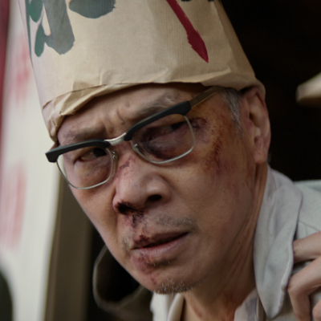

PERSONAGEM · TEMPORADA 1
Ye Zhetai
Pai de Ye Wenjie e professor de física. É morto durante uma sessão pública de perseguição política na Revolução Cultural.
Conteúdo até a temporada 1, episódio 8.
Ver Mapa de Conexões →HISTÓRICO DO PERSONAGEM
Temporada 1
Acompanhe os acontecimentos registrados até o episódio escolhido.
Episódio 01 — Countdown
Pai de Ye Wenjie e professor de física. É morto durante uma sessão pública de perseguição política na Revolução Cultural.
Personagens relacionados
- Ye WenjieFilha e pai